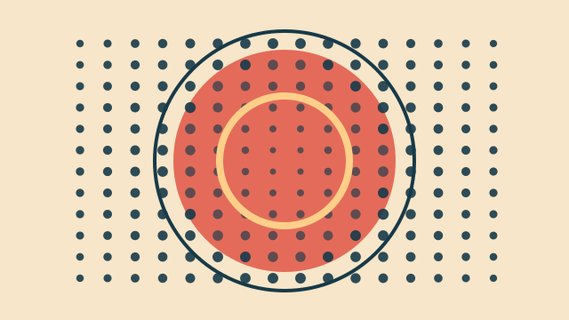
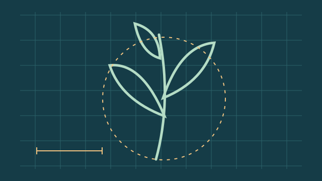
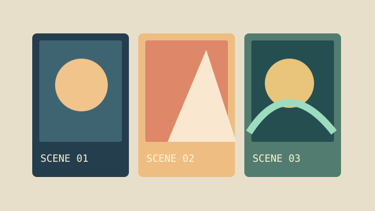

V0.46 / Six independent SVG pieces
独立原创矢量素材，非外部媒体或实时仪表。
VG-017 · Spectral ribbons / 光谱丝带
VG-018 · Editorial ticket plate / 编辑票券插画
VG-019 · Analog instrument dial / 仪表刻盘

VG-020 · Halftone orbit field / 网点环场

VG-021 · Botanical blueprint / 植物蓝图

VG-022 · Story contact sheet / 分镜接触样张